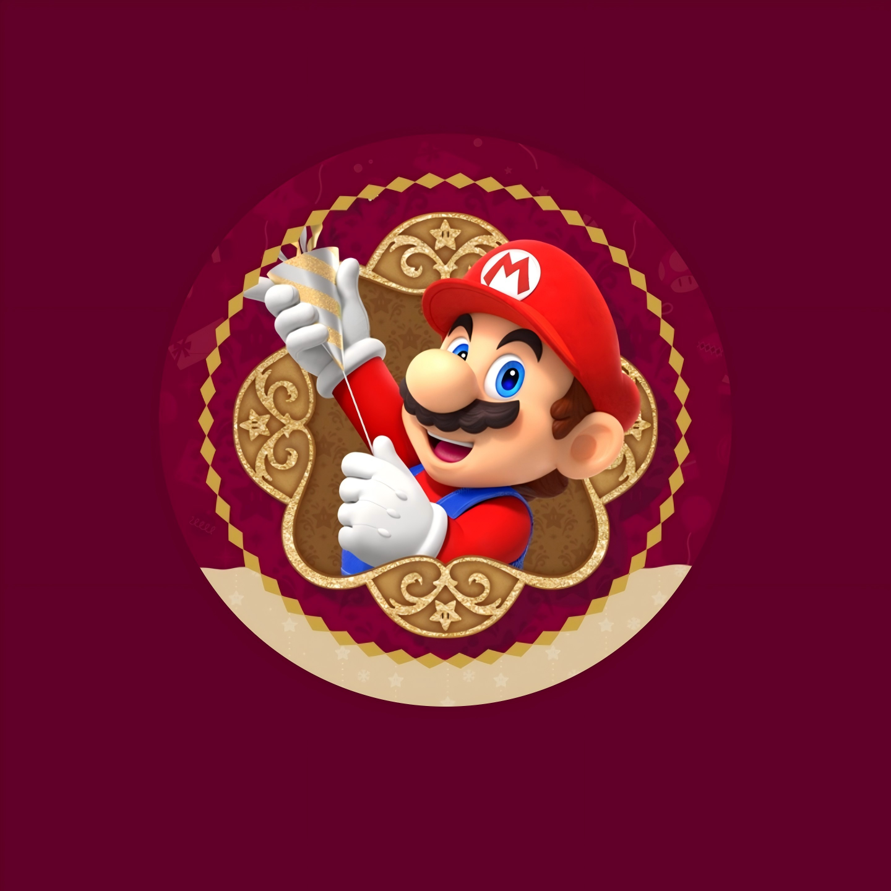

Nintendo Switch2
游戏游玩时长统计

老陈师傅
游戏总数:
19
老陈师傅的游玩时长排行
统计时间：2025年12月31日 | 总游玩时长：
453+
小时
总游戏数
19
已游玩游戏
总游玩时长
453+
小时
游玩最多
塞尔达传说
塞尔达传说 旷野之息 Nintendo Switch 2 Edition
105+ 小时
游玩时长分布
100+ 小时
1 款游戏
50-99 小时
3 款游戏
10-49 小时
7 款游戏
1-9 小时
5 款游戏
体验版/试玩
3 款游戏
全部游戏
50小时以上
10小时以上
10小时以下
试玩版